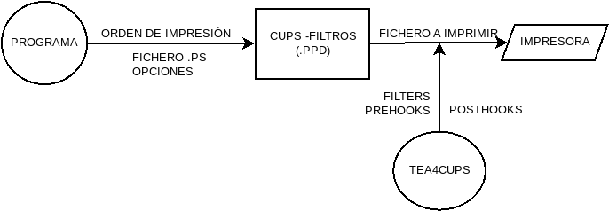

9.2. Impresión¶
La impresión se lleva a cabo en los linux modernos gracias al servidor
cups, y a una serie de drivers para las distintas impresoras en
formato .ppd. De todo ello tratará el presente documento.
9.2.1. Puesta a punto¶
9.2.1.1. Instalación¶
La instalación básica es sencilla:
# apt-get install cups
ya que basta instalar cups. Podemos también instalar una impresora virtual PDF, por si deseamos realizar pruebas y no disponemos de impresora:
# apt-get install printer-driver-cups-pdf
9.2.1.2. Ficheros¶
La configuración del servidor se almacena bajo /etc/cups. Tienen
especial relevancia:
cupsd.conf, que es el fichero de configuración del servidor.cupsd-printers.conf, que es el fichero donde se almacenan las impresoras configuradas.
El segundo es recomendable no retocarlo a mano, sino a través de las herramientas que proporciona cups. En el primero pueden tocarse los permisos para permitir que usen el servidor otras máquinas como clientes. Para ello es necesario:
Sustituir la línea:
Listen localhost:631por la línea:
Port 631Permitir expresamente el acceso en las localizaciones /, /admin y /admin/config con una línea del tipo:
Allow from 192.168.1.0/24o semejante que permita el acceso a las redes que nos interesen.
9.2.1.3. Permisos¶
En principio hay dos usuarios relacionados con la impresión:
- lpadmin, que tiene permisos para la administración.
- lp, que tiene permisos para imprimir.
9.2.1.4. Manejo¶
Hay dos formas de gestionar el servidor:
- A través de su interfaz web que escucha en el puerto 631.
- Mediante la línea de comandos.
La primera es bastante intuitiva y recomendable en la mayor parte de los casos, así que trataremos aquí la segunda.
9.2.2. Administración¶
9.2.2.1. Impresoras¶
9.2.2.1.1. Búsqueda¶
Lo primero es localizar cuáles son las impresoras disponibles para ser añadidas y cuáles son los drivers instalados en el sistema. Para lo primero[1][2]:
# lpinfo -v
network beh
file cups-pdf:/
network ipp
network ipp14
serial serial:/dev/ttyS0?baud=115200
network http
network https
network ipps
network lpd
network socket
network socket://172.16.1.241
En este caso, hay disponibles la impresora virtual PDF.(gracias a la instalación que ya hicimos de su driver) La consulta de drives disponbles se hace mediante otra opción:
# lpinfo -m
lsb/usr/cupsfilters/Fuji_Xerox-DocuPrint_CM305_df-PDF.ppd Fuji Xerox
...
9.2.2.1.2. Instalación¶
Debe usarse lpadmin. Por ejemplo:
# lpadmin -p PDFVirtual -D "Impresora PDF Virtual" \
-L "Ninguna" -v "cups-pdf:/" -m "lsb/usr/cups-pdf/CUPS-PDF.ppd"
esto añade la impresora virtual llamada PDFVirtual con una descripción
(opción -D) y una localización (opción -L) asociada al dispositivo
dado con la opción -v y usando el driver de la opción -m. Los valores de
las últimas opciones se han tomado de las salidas correspondientes de
lpinfo.
Una vez hecho esta. se habrá añadido la impresora y podremos verla al listar las disponibles:
$ lpstat -p
la impresora PDF está inactiva. activada desde dom 19 nov 2017 10:35:06 CET
la impresora PDFVirtual está deshabilitada desde dom 19 nov 2017 11:52:41 CET
La primera de ellas es la impresora virtual que se añade automáticamente al instalar el paquete que driver. De hecho, nuestra acción ha sido totalmente inútil, más allá de que sirva para ilustrar cómo agregar. Observemos que nuestra impresora está deshabilitada. Para habilitarla es necesario[3]:
# cupsenable PDFVirtual
# cupsaccept PDFVirtual
Si cups no dispone del driver adecuado, pero podemos obtener el
fichero .ppd, es posible agregar la impresora con él:
# lpadmin -p RICOH -D "RICOH Aficio MP 171" -L "Sala de Profesores" \
-v "socket://172.16.1.241" -P /path/a/MP_171.ppd
Aunque este método no hará disponible el fichero para posteriores agregaciones.
Si queremos que el el archivo .ppd se agrege a loa driver disponibles, basta
con moverlo a /usr/share/cups/model/ y reiniciar el servidor:
# mv /path/a/MP_171.ppdf /usr/share/cups/model/
# invoke-rc.d cups restart
Hecho esto, el driver aparecerá en la salida de lpinfo -m y se podrá
agregar la impresora usando la opción -m.
9.2.2.1.3. Gestión¶
Cuando hay varias impresoras, una de ellas es la predeterminada, esto es, aquella sobre la que se realizará una determinada acción (p.e. imprimir), en caso de que no se especifique sobre cuál. Podemos conocer cuál está definida como tal:
$ lpstats -d
destino predeterminado del sistema: PDFVirtual
Para cambiarla basta[4] con usar lpadmin:
# lpadmin -d PDF
Para borrar una impresora, basta con usar la opción -x:
# lpadmin -x PDFVirtual
9.2.2.1.4. Opciones¶
Las impresoras tienen una serie de opciones predeterminadas que pueden cambiarse mediante la orden lpoptions:
# loptions -p RICOH
copies=1 device-uri=ipp://172.16.16.241/xxxx finishings=3
job-cancel-after=10800 job-hold-until=no-hold job-priority=50
job-sheets=none,none marker-change-time=0 number-up=1
printer-commands=AutoConfigure,Clean,PrintSelfTestPage printer-info='RICOH
Aficio MP 171' printer-is-accepting-jobs=false printer-is-shared=true
printer-location='Sala de Profesores' printer-make-and-model='Ricoh Aficio MP
171 PXL' printer-state=3 printer-state-change-time=1511091934
printer-state-reasons=none printer-type=8917204
printer-uri-supported=ipp://localhost/printers/RICOH
Sin más, muestra las opciones con la que está definida. Estas opciones pueden
alterarse (o añadirse otras) usando la opción -o. Ahora bien, también
podemos crear instancias de la impresora que contengan distintas opciones de
impresión. Por ejemplo:
# lpoptions -p RICOH/doscaras -o sides=two-sided-short-edge
De esta forma, lograremos otro perfil de impresión que incluye de forma predeterminada la impresión a dos caras. De hecho, si comprobamos las impresoras disponibles, ahora veremos esto:
# lpstat -p
la impresora PDF está inactiva. activada desde dom 19 nov 2017 10:35:06 CET
la impresora RICOH está inactiva. activada desde dom 19 nov 2017 12:45:34 CET
la impresora RICOH/doscaras está inactiva. activada desde dom 19 nov 2017 12:45:34 CET
Si lo que se desea es eliminar una opción puede usarse la opción -r:
# lpoptions -p RICOH/doscaras -r sides
pero entonces nuestro perfiles de dos caras, imprimirá a una y será exactamente igual que el perfil normal.
Hay un conjunto de opciones que son comunes a todos los drivers y que pueden consultarse en la página de manual de lp. Otro conjunto, sin embargo, ique son particulares de cada driver, pero pueden consultarse gracias a lopoptions:
$ lpoptions -p RICOH -l
OptionTray/Option Tray: *NotInstalled 1Cassette 2Cassette
ColorModel/Color Mode: *Grayscale
Resolution/Resolution: *600dpi
PageSize/PageSize: A4 A5 B5 Legal *Letter Statement F Folio ...
InputSlot/InputSlot: MultiTray 1Tray 2Tray 3Tray *Auto
Duplex/Duplex: *None DuplexNoTumble DuplexTumble
Collate/Collate: *False True
MediaType/Paper Type: *Auto Plain Recycled Special Colored Letterhead
Preprinted Prepunched Labels Bond Cardstock OHP Thick
RIPrintMode/Toner Saving: *0rhit 5rhit
JobType/JobType: *Normal
UserCode/User Code (up to 8 digits): *None 1001 1002 1003 Custom.PASSCODE
Con lpoptions también puede cambiarse la impresora predeterminada, incluso a un perfil particular:
# lpoptions -d RICOH/doscaras
Advertencia
Sin embargo, lpadmin y lpoptions no actúan
sobre la misma parte de la configuración (el primero altera
/etc/cups/printers.conf y el segundo crea /etc/cups/lpoptions)
y prevalece lo dispuesto por este segundo. Esto hace que si se ha usado
lpoptions y se ha creado el segundo fichero, lpadmin,
deje de tener efecto. Por tanto, es bastante más recomendable usar
lpoptions siempre para este propósito.
9.2.2.2. Trabajos¶
9.2.2.2.1. Impresión¶
Desde línea de comandos es muy sencillo imprimir ficheros de texto, postscript o pdf:
$ lp /etc/passwd
$ ls /usr/bin | lp
$ lp certificado.pdf
Usado de este modo imprimiremos en la impresora predeterminada con las opciones predeterminadas. Si queremos imprimir algún otro tipo de fichero tendremos que hacer una conversión previa a uno de estos tres tipos. Por ejemplo:
$ w3m -dump http://www.google.es | lp
imprime la página principal de Google, puesto la
opción -dump hace una transformación a texto plano de la página [#]_.
Si se desea imprimir con otra impresora puede hacerse a través de la opción
-d:
$ lp -d RICOH certificado.pdf
$ lp -d RICOH/doscaras certificado.pdf
Para alterar las opciones predeterminadas de impresion, puede incluirse la
opción -o:
$ lp -d RICOH -o sides=sides=two-sided-short-edge certificado.pdf
Si se quiere redefinir varias opciones, se puede repetir la opción -o
o usar la misma y separar con un espacio:
$ lp -d RICOH -o sides=sides=two-sided-short-edge -o media=a4 certificado.pdf
$ lp -d RICOH -o "sides=sides=two-sided-short-edge media=a4" certificado.pdf
Para mandar varias copias a la impresora existe la opción -n:
$ lp -n2 certificado.pdf
9.2.2.2.2. Gestión de colas¶
La consulta de los trabajos de impresión puede realizarse con lpstat:
$ lpstat
PDF-3 usuario 2048 dom 19 nov 2017 17:59:35 CET
PDF-4 usuario 2048 dom 19 nov 2017 18:02:34 CET
La orden muestra los trabajos pendientes y es equivalente a:
$ lpstat -W not-completed
También pueden listarse los trabajos ya completados (completed) o ambos
(all). Se puede añadir la opción -o para sólo mostrar los trabajos de
una impresora. Por ejemplo:
$ lpstat -W all -o PDF
Cuando no se especifica usuario, se sobrentiende que los trabajos son los
propios del usuario que ejecuta la orden. Puede añadirse -u para mostrar los
de otros usuarios:
$ lpstat -W all -o PDF -u usuario,root
Si lo queremos es cancelar trabajos de la cola antes de que la impresora los
cancele, podemos usar :command:cancel:
$ cancel PDF-4
También se pueden cancelar todos los trabajos pendientes de un usuario:
$ cancel -u usuario
aunque sólo podremos cancelar los del usuario propio si no somos el administrador. Este, además, puede limpiar por completo la cola de pendientes:
$ cancel -a
9.2.3. Profundización¶
Los programas (editores y procesadores de texto, visores de pdf, etc.) envían a
cups el contenido del fichero en formato postscript (.ps) junto a las opciones de
impresión que se hayan seleccionado. Con ambos datos, el servidor se encarga de
componer el fichero que se manda a la impresora gracias a las reglas que se
establecen en su driver .ppd. Para ello:
Se añaden al principio del fichero las opciones de impresión mediante instrucciones PJL. Por ejemplo:
@PJL SET COPIES=2le indica a la impresora que debe sacar dos copias del documento, lo cual es una traducción de la opción
-nde lp.Tras la cabecera se incluye el contenido del documento en el formato que soporte la impresora. Si este es
.ps, no será necesaria hacer ninguna transformación. Si es otro, como PXL, entonces el.ppdindicará a cups que haga uso de gs (ghostscript), para llevar a cabo la transformación.
Estas acciones que determina hacer el driver .ppd son las que se denominan
filtros propician la creación del fichero final que se envía a la
impresora.
9.2.3.1. tea4cups¶
tea4cups es un wrapper para los drivers de cups, que permite interceptar la orden de impresión después de que se hayan aplicado los filtros y antes de que el fichero sea enviado a la impresora.
El esquema de funcionamiento es el siguiente:
Como puede verse, al actuar tea4cups, el driver ya ha actuado sobre el fichero postscript que originariamente había enviado el servidor[5].
tea4cups proporciona tres herramientas para manipular la impresión:
- filter, que es la primera que actúa y que únicamente permite alterar el
- flujo de datos. Debe ser un programa que tome por la entrada estándar los datos de impresión y devuelva por la salida estándar los datos modificados de impresión. No hay más acceso que al contenido de los datos.
- prehook, ganchos que actúan a continuación del filtro anterior y antes de
- que se envíen datos a la impresora. Hay disponibles algunas variables de ambiente y si acaba con un error 255, cancela la impresión.
- posthook, ganchos que actúan después de que se haya dado la orden de
- impresión.
Notas al pie
| [1] | Se muestra el uso del comando como administrador, pero bien podría ser usando por otro usuario que perteneciera al grupo lpadmin: $ /usr/sbin/lpinfo -v
|
| [2] | Si se usa además la opción # lpinfo -l -v
|
| [3] | lpadmin dispone de la opción -E para habilitar la
impresora, pero en mi sistema parece no funcionar. |
| [4] | … o no. Véase qué pasa con lpoptions. |
| [5] | De hecho, si probáramos a pasarle el código html: $ wget -qO - http://www.google.es | lp
Lo que obtendríamos es la impresión del código fuente. |
| [6] | El fichero a imprimir se almacena en /var/spool/cups/ y su nombre
completo se almacena en la variable TEADATAFILE. Hay otra variable
llamada TEAINPUTFILE que contiene el nombre del fichero original, pero
no en todos los drivers está disponible. |